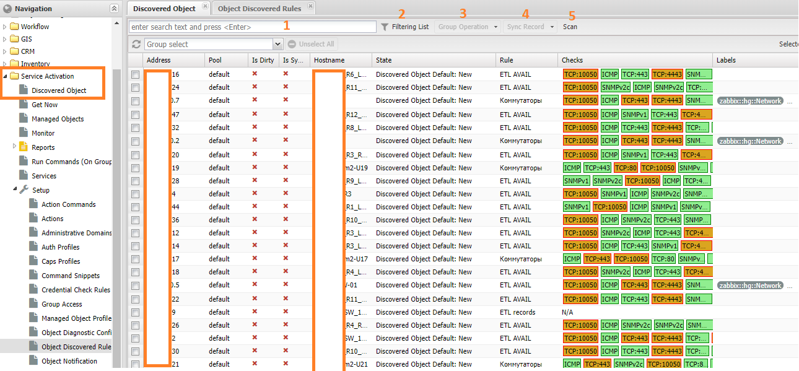
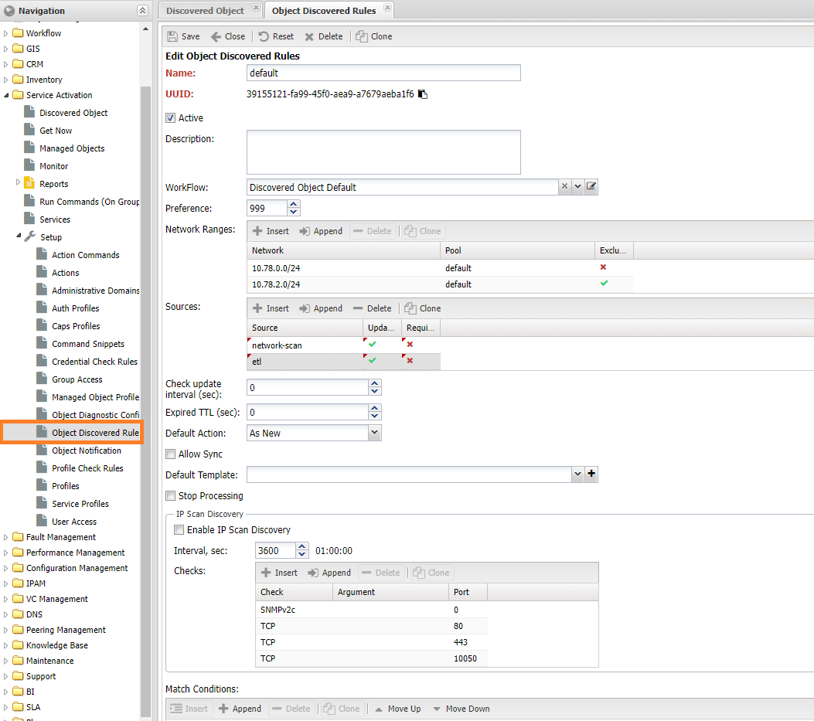
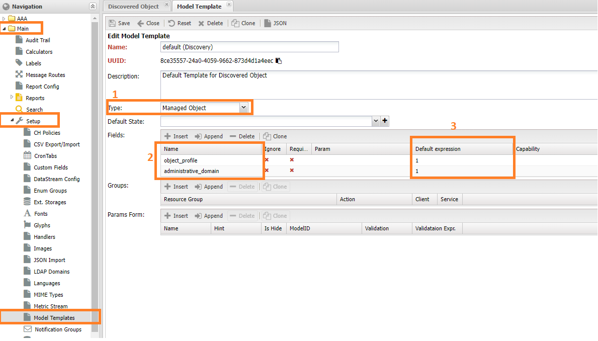
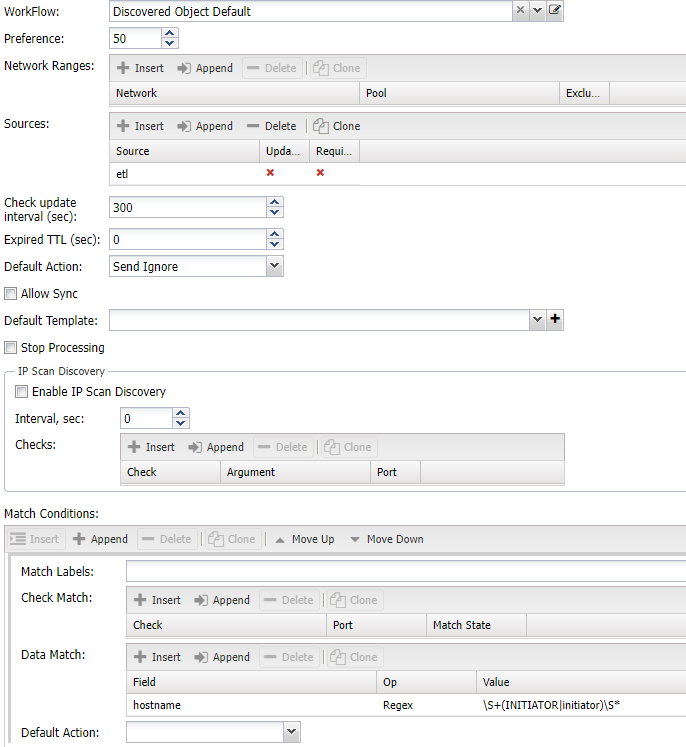
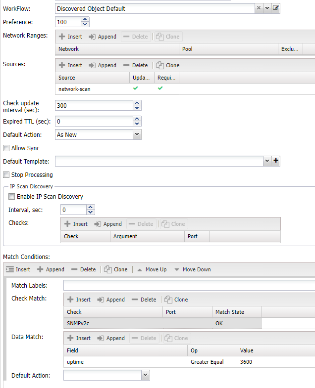

Выявлением устройств путём опроса IP подсетей¶
Первоначальное заполнение системы данными достаточно трудоёмкий процесс, требующий значительных затрат времени. Помимо привычных инструментов: ручное добавление через веб-интерфейс в НОКе доступен опрос IP сетей на предмет наличия в них доступных IP адресов. Анализ этих адресов на предмет открытых протоколов позволяет выявлять активное сетевое оборудование, с последующим занесением его в систему в качестве устройств (Managed Object). Активный опрос сетей позволяет:
- Автоматизировать занесение устройств (Managed Object) в систему
- Актуализировать адреса в
IPAM, получая их во время опроса сети - Позволяет обнаруживать изменения в части новых IP адресов
Следующие компоненты системы могут быть источниками данных для опроса:
- network-scan - активный опрос сети. Выполняется командой
./noc net-scan - etl - обмен данными с внешними системами
- neighbors - не распознанные системой соседи протоколов сети
- snmptrap/syslog - сообщения в систему от неизвестных отправителей
- manual - ручной ввод данных
Обнаруженные адреса заносятся в систему для дальнейшей обработке - вручную или на основе правил.
Info
Обнаруженные адреса попадают в систему только при наличии настроенного правила, если такового нет они сохраняются во временном хранилище
Запуск опроса сети¶
Для запуска опроса необходимо выполнить команду /noc net-scan с заданными ключами:
--in= файл с построчным списком подсетей (префикс в отдельной строке)--pool- задание пула, для которого производится запуск--adm-domain- ЗО для устройств--jobs- число доступных потоков для выполнения--dry-run- выполнить опрос, но не отправлять результаты в систему--print-out- печатать результаты опроса на консоль--ports- набор портов для проверки подключения по TCP, разделённых запятыми--checksнабор дополнительных проверок (из доступныхchecks)--community- перечень snmp community (для версийv1,v2)--snmp-user- пользователь дляSNMPv3--labels- набор меток, разделённых запятыми--ip-scan- опрашивать префиксы, отмеченные вIPAM--rule- опрашивать диапазоны, заданные в правиле (Object Discovery Rule)- список IP префиксов для опроса
Обнаруженные адреса (доступные по ICMP) направляются для дальней обработки.
Примеры использования¶
Опросить сети 172.16.1.0/24 и 10.11.12.0/24, проверив SNMP v1/v2c/v3 и порты 80,443,10050,4443,6443. Результат не отправлять в систему, а распечатать на экране
./noc net-scan --dry-run --print-out --pool default --community public --snmp-user xxx:SHA:key1:AES:key2 --ports 80,443,10050,4443,6443 172.16.1.0/24 10.11.12.0/24
Опросить сети, отмеченные в IPAM для сканирования, проверив SNMP v1/v2c с несколькими community. Результат отправить в систему
./noc net-scan --pool default --community,my1,my2 public --ip-scan
Запустить опрос, согласно настройкам правила default из Object Discovery Rule
./noc net-scan --community public --rule 'default'
Получения данных из внешних систем¶
При выгрузке устройств (Managed Object) из внешних систем через механизм ETL есть возможность выбрать: создавать из записей устройства (Managed Object) или направить их в найденные (Discovered Object). В этом случае данные опроса network-scan и полученные из внешней системы etl будут объединены на основе IP адреса и пула (Pool) и в итоге будут отображаться как одна запись.
[!NOTE]
В случае источника network-scan обнаруженным считается адрес, доступный по
ICMP, для etl обнаруженным считается любой IP адрес
Обработка результатов¶
После сбора данных происходит их обработка согласно правилам. При совпадении условий, IP адрес заносится в список найденных устройств (Discovered Object), расположенном в меню Service Activation -> Discovered Object. В соответствии с настройками записям присваивается одно из доступных состояний (столбец State):
- New - новая запись. Состояние по умолчанию для всех записей
- Approved - подтверждённая запись. Выставляется для записей, готовых для синхронизации. Может быть выставлена автоматически, либо вручную.
- Ignored - необходимо игнорировать запись при синхронизации
- Removed - готовая к удалению запись. Запись, для которой время последнего опроса превышает интервал expired

Помимо текущего состояния, отображаются следующие сведения:
- Адрес (Address) - IP адрес записи
- Пул (Pool) - системный пул, в котором была зарегистрирована запись
- Изменена (Is Dirty) - флаг изменения, сигнализирует об изменении записи и необходимости её синхронизации
- Синхронизирована (Is Synced) - флаг синхронизации, показывает что на базе записи было создано устройство (Managed Object)
- Имя IP адреса (Hostname) - обнаруженной имя IP адреса
- Правило (Rule) - назначенное правило
- Проверки (Checks) - список проверок, с отображением результатов
- Метки (Labels) - набор меток, соответствующий записи
Также для Найденных устройств (Discovered Object), на панели инструментов доступны следующие действия:
(1)Поиск - поиск происходит по полям:- hostname - имя адреса
- description - описание
-
address - при указании префикса в формате
X.X.X.X/YYпоиск будет идти по подсетям -
(2)Показать панель фильтрации (Filtering List) (3)Групповые операции (Group Operation) - позволяет массовое изменение статусов (State)(4)Синхронизировать запись (Sync Records) - позволяет вручную запустить синхронизацию записи. Для выполнения необходимо выбрать шаблон, либо будет взят шаблон из правила (Object Discovery Rule)(5)Scan - запуск ручного сканирования Не реализовано
Info
Действия выполняются для всех записей с отметкой в крайнем левом столбце
Правила обработки результатов¶
Всем обнаруженным IP адреса (IP Address) сопоставляются правила (Object Discovery Rule), если подходящего правила не нашлось, то обнаруженный адрес помещается во временное хранилище, до появления подходящего правила. Настройка правил расположена в меню Service Activation -> Setup -> Object Discovery Rules, и содержит следующие пункты:

- Имя (name) - наименование правила
- Описание (description)
- Активное (Is active) - правило находится в работе
- Приоритет (preference) - приоритет обработки правила: ниже - раньше
- Диапазоны (Network Ranges) - список диапазонов IP подсетей, подпадающих под правило
- Диапазон (Network) - диапазон IP адресов. Задаётся в виде префикса, либо через дефис:
10.0.0.2 - 10.0.0.50 - pool - ссылка на системный пул (Pool)
- exclude - исключить диапазон из обработки
- Процесс (Workflow) - процесс по которому происходит движение
- Источники (Sources) - перечень источников с указанием приоритета. При отсутствии считается что подходит любой
- source - источник записи
- remote_system - внешняя система, из которой поступила запись (работает для источника
etl) - update_last_seen - обновлять время последнего обнаружения для этого источника
- Требуется (is_required) - обязательное наличие источника для совпадения записи
- Критерии (Conditions) - настройка критериев совпадения правила
- Метки (Match Labels) - набор меток для совпадения критерия. Должны совпасть все указанные
- Проверки (Match Checks) - критерий на базе проверок
- Проверка (Check)
- Порт (Port)
- Состояние (match_state)
- ok - проверка завершилась успехом
- fail - проверка завершилась провалом
- any - любой результат проверки
- Данные (Match Data) - критерий на базе данных
- field - название поля:
hostname,description,uptime - op - операция для совпадения
regex- по регулярному выражениюcontains- содержит==- соответствует!=- не равноеgte- больше либо равно (текстовые данные будут сравниваться как текст)lte- меньше либо равно (текстовые данные будут сравниваться как текст)- value - значение для сравнения
- field - название поля:
- Включить опрос диапазона (enable_ip_scan_discovery) - включить опрос диапазонов
- Интервал опроса диапазона (ip_scan_discovery_interval) - интервал проверки диапазонов
- Проверки (Checks) - настройки проверок при опросе
- Проверка (Check) - выполняемая проверка
- Порт (Port) - TCP порт
- Аргумент (Arg) - дополнительный аргумент (для проверки)
- Действие по умолчанию (Default Action) - выполнить действие при совпадении правила
- new - зарегистрировать запись как новую
- approve - подтвердить запись
- ignore - игнорировать запись
- skip - пропустить правило (перейти к следующему)
- Sync on Approved - запустить синхронизацию при подтверждении записи. Требует чтобы был указан шаблон(Default Template)
- Шаблон по умолчанию (Default Template) - шаблон для синхронизации записи
Правила обрабатываются в порядке возрастания поля приоритет (Priority), по первому совпадению оно назначается IP адресу. Для совпадения проверяются следующие критерии:
- Соответствие IP адреса диапазону из раздела Диапазоны. Пустой раздел считается совпадающим с любым адресом
- Далее проверяется Источники (Source), если не выставлена галочка Требуется (Is requred) значит должен быть любой источник из списка. При отсутствии настроенных источников считается что подходит любой
- После источников сравниваются Критерии (Conditions):
- По меткам
- По проверкам
В критериях по данным (Data) доступны следующие:
- hostname - имя IP адреса
- description - описание устройства (при опросе значение
sysDescr) - uptime - аптайм устройства (только при наличии SNMP)
Разрешение конфликтов источников¶
При получении записей из нескольких источников может возникнуть ситуация, когда часть атрибутов есть в нескольких из них. Например это поле hostname может быть получено с устройства, в таком случае приоритет задаётся положением источников в настройке source - при совпадении атрибутов приоритет отдаётся тому, чей источник выше. В случае же отсутствия настроек в поле source используется приоритет по умолчанию:
- network-scan
- neighbors
- etl
- manual
Дедупликация¶
У одного устройства может быть больше одного IP адреса, в этом возможна ситуация при синхронизации для каждой записи создастся отдельное устройство (Managed Object). Поэтому предусмотрен механизм проверки соответствия IP адресов одному устройству. Это делается путём сравнения доступных идентификаторов: hostname и chassis_id. У записи принадлежащие одному устройству выставляется указатель на родительскую, которая и используется для синхронизации.
Сигналы¶
Глобальные настройки¶
Для работы с обнаруженными адресами существует несколько глобальный настроек в разделе network_scan конфигурации. Текущие значения можно увидеть командой ./noc config dump network_scan:
purgatorium_ttl- время устаревания записей по обнаруженным адресам. Записи, старше указанного времени исключаются из работы
Шаблоны устройств¶
Данных полученных при обнаружении не достаточно для создания устройства (Managed Obejct), из обязательного состава доступны:
- Адрес (Address)
- Пул (Pool)
- hostname
Для указания остальных атрибутов используется Шаблоны (Model Template). Расположены в меню Основные -> Настройки -> Model Template (Main -> Setup -> Model Template). В колонке Name (2) указывается имена атрибутов для устройства (Managed Object), в Default Expression значение по умолчанию для соответствующего атрибута. В примере это идентификаторы соответствующих записей из справочников.

Для создания устройства обязательными являются следующие атрибуты:
- administrative_domain - Зона ответственности
- object profile - Профиль объекта
- segment - сегмент сети
- auth_profile - профиль авторизации, если не используется подбор реквизитов доступа
Примеры настроек¶
Под приведённый выше пример, подпадают записи из сети 10.78.0.0/24, также в нём настроен опрос данной сети с проверками SNMPv2 и портов TCP 80,443,10050`.
В примере ниже настроено игнорирование всех адресов, полученных из любой внешней системы (etl) с именем (hostname) совпадающем с шаблоном \S+(INITIATOR|initiator)\S*.

В примере ниже, описаны любые адреса (без ограничений по диапазону), полученные в ходе опроса сети (network-scan), прошедшие проверку по SNMPv2c и аптаймом больше часа.

Занесение результатов с IPAM¶
Результаты опроса адресом можно использовать для актуализации IPAM, для этого в профиле префикса (Prefix Profile) необходимо разрешить создавать адреса из обнаруженных, отметив галочку (IP Discovery (Ping)), после этого раз в 5 минут процедура синхронизации будет запрашивать обнаруженные адреса и создавать на их основе записи в IPAM.

Автоматический запуск сканирования¶
Warning
Данный функционал на текущий момент не реализован